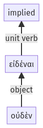

Lysias, Oration 1, 1.19.13-1.19.15a
1.19.1-1.19.12a | 1.19.16-1.19.38a
Sentence 49
1.19.13-1.19.15a
οὐδὲν γὰρ εἰδέναι:
οὐδὲν γὰρ εἰδέναι:
Highlighting:
- connecting words
- unit verb
- subject
- object
Color code:
- Independent clause (level 1, transitive verb)
- infinitive in indirect statement (level 2, transitive verb)
